How MIMo will reach the target, step by step
The task. MIMo is a simulated infant body moved by the physics program MuJoCo. UEMA is the learning program that controls it. UEMA picks a target T: a pose the body held earlier. The job is to bring both hands to where they are in T and keep them there. Two AI sessions work on this beside the operator: the builder writes the code, runs the checks and wrote this page; the overseer reviews the evidence and, under the operator's delegation of October 13, decides what may run.
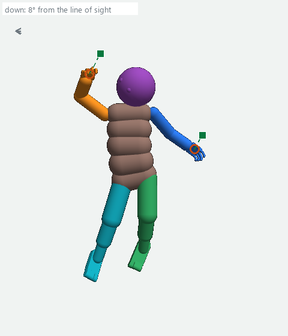
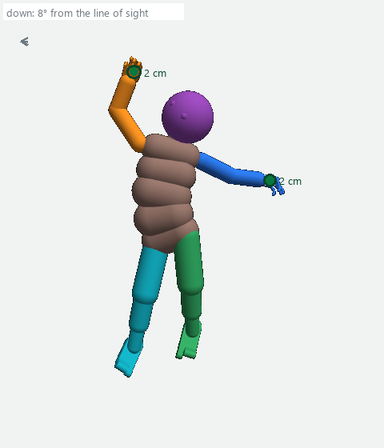
- Arrows point the way the numbers flow.
- The line from part 3 to part 7 crosses three arrows (the tokens into part 5, the pose into part 5, the channels into part 5); at each crossing it is drawn with a small bridge and the lines do not join.
- The dashed line from part 8 ends at a ring that stands for the four-part loop drawn below it.
- The loop along the bottom and left edge carries the body's readings to part 1 and the body's pose to part 7.
- The branch from part 7 into the smoothing is the command between planner commands of section 2 (a babble command while a bout is on; a babble bout = a stretch of 2 to 5 s in which random noise is added to part 7's command, defined in section 2); step 2 removes it.
2: one network per sense turns its readings into a token, a fixed-length list of numbers.
3: the large network that takes the tokens and outputs one list of numbers per token for the parts after it.
4: the prediction heads output each sense's token 50 ms ahead; the body head (the code's efference body head) reads the command, part 3's output and the body's present pose, and outputs each body part's position change (cm) and turn (degrees) 50 ms and 250 ms ahead; this page uses the 250 ms output.
Wellness: 14 channels scored every model step from the body's readings, a harm reading (the worse of skin pain and
1 - motor_state, a penalty for handles near their reach) and a gradient of the grounded wellness terms with respect to the body's present pose; no repair on this page changes it (code: Source/Python/lem/model/wellness.py and wellness_channels.py at commit 7dd0eabda).5: a memory of the last 200 model steps: each one's pose (the measured world position and turn of each of the 25 body parts and the eye row), part 2's tokens, the 14 channel values and the harm reading.
6: scores each of the 200 by a weighted sum of its 14 stored channel values (each stored as the value minus the body's running average, then centred and scaled by its running statistics), skips any whose harm reading is over the harm line 0.92 unless all 200 are over it (then the least harmful is taken), and outputs the highest one's pose as T; no repair on this page changes it (code: wellness_channels.py at commit 7dd0eabda).
7: a network that reads part 3's output, the body's pose and the wellness gradient and outputs a command. The first command is that output with its ten finger rows rewritten as the projection of part 7's own finger rows onto what the hand's joints can make, its finger joint goal (the numbers part 9 reads for the fingers) replaced by the choice of a separate search stage (the hand stage), its eye row replaced by the choice of another separate search stage (the gaze search), its turns normalized, its strengths clamped to 0.0001 to 0.9999 and its radii to 0 to 1.
8: makes 20 Adam updates (step size 0.1) to the first command's numbers along the gradient of the predicted pose error (plus the command space's own penalty); every version is kept within 1.80 cm per axis and 11.0° of the first command, and the numbers part 9 ignores are copied from it. Each version is encoded by part 2 (the motor token), run through part 3 and read by the body head; part 8 sends the version with the lowest pose error if that error is below both the first command's and the start pose's, otherwise the first command (6 of the run's 72 commands; the code at commit 7dd0eabda: intention_generator.py; PhysicalTrustRegion and pose_return_keep in physical_goal.py).
The pose error: for each of the 25 body parts, each of the three position differences from T divided by 1.80 cm and squared, averaged over all parts and axes; plus each of the three turn components divided by 11.0° and squared, averaged the same way (0 = every part at T; physical_goal.py pose_error_per_body).
An effort term, 0.01 × the sum of the squared strengths, breaks only an exact tie.
Smoothing: what the body receives is 0.35 × the chosen version + 0.65 × the smoother's own output of the previous model step (the run's setting --smooth-source proposal: that output is formed every model step and kept as the next model step's previous one; the body receives it only on the model steps where a new command is latched, every 5th), positions, turns and strengths alike (lem_model.py smooth_blend; the run's setting 0.35); the search's forecast is made for that blended command.
The command: 25 body-part rows and one eye row, each with a position (x, y, z; held inside the planner as fractions of 200 cm, saved by the recorder in cm), a turn (4 numbers naming one 3-D turn), a radius (ignored by part 9; read by parts 2 and 4) and a strength (0 to 1, how hard the motors push).
9: turns the rows into one control number per motor (−1 to 1).
The observer recorder saves the joint positions, the command and the planner's numbers every model step; a record is one such saved set.
Body 1 in the run of October 23: T, the start, then the end of 17 of its 20 commands (the counted span, model steps 496,260 to 496,344, 4.25 s), cropped to the upper body, read left to right then down. The same T for all 9 planner commands. In these crops the "down" arrow is drawn without its label: gravity is … from the line of sight across them (each crop's angle is in plan_pictures.json).
Planner commands come from part 8 and last 5 model steps. Between two planner commands the body receives part 7's command, because the planner runs every 10 model steps while a command lasts 5: with random noise added while a babble bout is on (a babble command, orange border), without noise while the bout is off (orange dashed border).
The bouts (the run's setting --babble-bouts real): on for 2 to 5 s, then off for 1 to 3 s, each length drawn at random, the same schedule in all 8 bodies; the record's author field names each command's kind.
In this span the bout was off from record 496,287 to record 496,315, so the six commands latched at 496,290 to 496,315 were drawn with it off (it was on again from record 496,316); the three of them that were part 7's, at 496,295, 496,305 and 496,315, carried no noise.
The noise (the run's setting --babble-noise 0.05; the code's _independent_babble): each row's position moved by a random amount of standard deviation 5 cm per axis, the change from the part's present position then clamped to ±40 cm per axis; its strength raised by the absolute value of a normal draw of standard deviation 0.05; its turn changed by a random turn of standard deviation 0.5 rad (29°) per axis; then the smoothing of section 1 passes 35 of 100 of it to the body. A babble command has no target.
- Neither hand got inside 2 cm and stayed there (stayed = inside at each of the 20 model steps after arriving, section 4's reading).
- Left hand's gap: 6.7 cm at the start, 1.5 cm at best after planner command 4 (the planner's own record of that end: 1.6 cm), 8.0 cm at the end.
- Right hand's gap: never below 8.0 cm (after planner command 5).
- The command between two planner commands changes the gap as much as a planner command: over the run's 54 pairs of consecutive planner commands at one T (108 hand readings; the command between them carried noise in 31 pairs and none in 23), the change in the gap over a command, without its sign, had a median of 1.69 cm across the command between them and 1.73 cm across the planner command; across the command between them the hand ended nearer in 54 of the 108 readings and farther in 54 (across the planner command, nearer in 57).
- After babble command 3 the left hand went from 5.4 cm to 13.4 cm.
Body 5, the command at model step 496,280. Of the run's 72 commands this one's predicted pose error missed the measured one by the most: predicted 21.59, measured 38.51. Real saved states, one camera frame, gravity 2° from the line of sight in the four body-5 pictures below (body 3's four pictures carry their own angles), with the predicted parts drawn over them as the diagnosis of October 23 (the analysis of the run's 72 commands) recorded them.
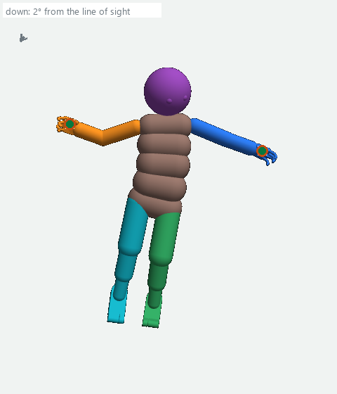
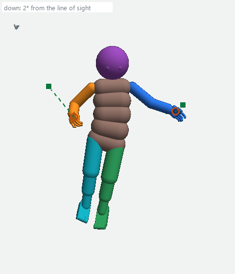
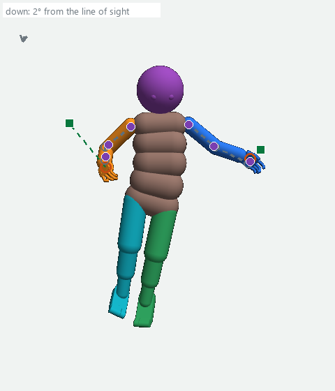
Why part 8 could not have chosen a command toward T even with a perfect prediction. Part 8 starts from the first command and may move each row at most 1.80 cm per axis; the smoothing then passes 35 of 100 of a change to the body. In this run the first command's wrist rows, in the smoothed form the body would receive, lay 5.37 to 26.56 cm from T's (body 5: left 12.44, right 26.56 cm); before the smoothing, part 7's request for body 5's right wrist was 27.2 cm from T's row and 9.5 cm from the hand, farther from T than the hand itself (22.7 cm).
In the planner's saved record of the decision at model step 496,260 (its capture), the chosen version and the first command, both in the smoothed form the body receives, differ on 12 of the 45 position axes of a body's 15 free body rows (the 25 body rows minus the ten finger rows, 3 axes each) by exactly 0.63 cm, which is 35 of 100 of 1.80 cm, and on the other 33 not at all (0.00 cm); the 12 are the four rows whose positions part 9 reads (the two wrists, the head, the lower trunk), and this holds in each of the 7 bodies whose command part 8 changed (body 3 sent the first command unchanged).
The overseer's correction (11:21 PM), as the D1 record states it: this shows a search-coverage limitation (the bound applies to the raw version before smoothing; the 0.63 cm is the smoothed difference and equals 35 of 100 of the bound only because both were blended with the same previous smoother output), not proof that the body head would choose a command at T or that it explains the whole miss. Section 5 draws the bound.
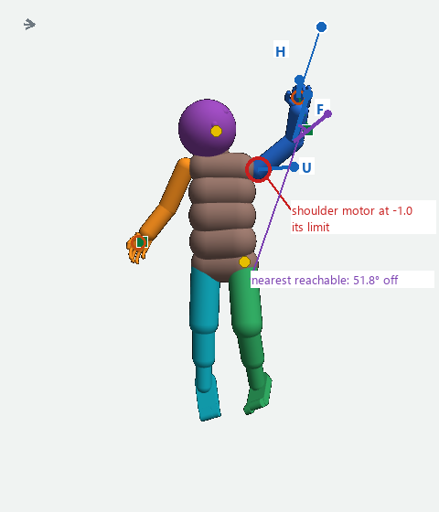
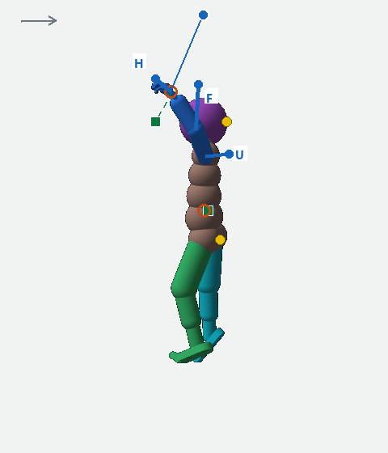
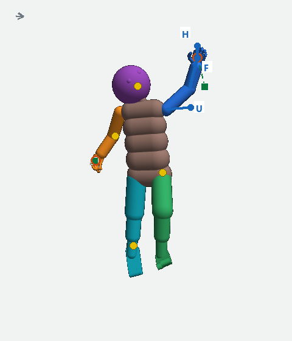
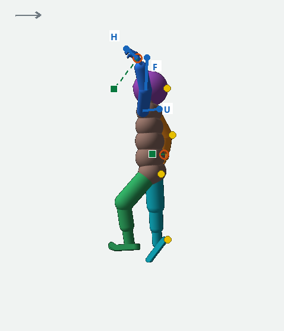
From each of eight saved starts (model step 496,259, the record before the first of the run's 72 counted planner commands; the run's own first decision, at model step 496,250, is the one the two-branch comparison of section 7 uses), one command was held for 60 model steps (3 s): the direct command (T's own rows) and, from the same rebuilt start, the planner command the run sent; the eye row followed the run's recorded eye commands for the first 5 model steps, then held the fifth of them (record 496,264's) for the remaining 55 model steps, the same for both commands. The gap was read every model step.
Before either command is sent the rebuilt start is compared with the saved record: each hand point within 0.2 cm; the turns of the 15 body parts the replay tool compares (the 25 minus the ten finger rows) within 1° on average; the same contact pairs (with the floor or anything else), each contact point within 0.1 cm. These lines were set before the run. In this run all 8 starts passed the screens, and a repeat of the planner command reproduced its 60 model steps exactly (digests equal in all 8 bodies); the direct command was not repeated. The differences found are the start mismatch: the largest over the 8 bodies was 0.0000847 cm at a hand point and 0.0001092° at a part.
Two readings of the gap on this page. The numbers in every caption of a step 1 picture on this page (this section's strip, grid and table, and the step 1 pictures of sections 5, 7 and 8) are the result file's, read from the planner's stored poses as the baseline tool reads both commands; the marks on the pictures are drawn from the saved joint positions; the two readings differ by up to 0.6 cm (body 5, direct command at 250 ms, right hand: 5.0 cm in the file, 4.4 cm by the picture; the stored pose is one 5 ms physics substep before the record).
Pose error, printed beside the gap below, is section 1's pose error (the effort tie-breaker is not part of it; 0 = every part at T).
Spread, used in the pass lines of the learning runs and retrainings below, is the difference, in the keep line's own measure, between two runs of the same configuration from the same saved state, measured before the comparison it serves; for each keep line below, the overseer orders those two runs and the builder registers their Tests row before the keep reading is taken.
Part 4's stored prediction for the planner command covers its first 5 model steps, so it is compared only there.
Two facts the reading carries. Between each T's record and its start the body's root (its base) moved 0.80 to 3.25 cm and turned 8.76 to 22.93°, so under the direct command, whose rows are T's world positions and turns, the limbs must also move by that shift to reach T's positions; and it pushes each row at the planner command's strength (0.2373 to 0.8382 on the six arm rows; 0 = no push, 1 = full).
Read, per hand, at every model step: the gap. Arrived = both gaps ≤ 2 cm at some model step 1 to 40 (the arrival step). Stayed = both gaps ≤ 2 cm at the arrival step and at each of the next 20 model steps; the result file also reports staying after any arrival up to model step 40.
Body 5: the direct command brings both hands to T; the planner command does not (gravity … from the line of sight in these five)
All eight bodies: the start, T, the direct command at 3 s, the planner command at 3 s (one camera frame per body; each row's caption gives gravity's angle from the line of sight)
| Body | start L / R | pose error | planner command, 250 ms L / R | planner command, 3 s L / R | pose error | direct command, 250 ms L / R | direct command, 3 s L / R | pose error | direct command: both hands |
|---|
The misses with the direct command at 3 s, none explained yet (the joint and contact series are saved), to two decimals because several lie at the 2 cm line: body 0's left hand 4.01 cm (its right 1.92 cm, inside); body 1's left 2.02 cm and right 1.97 cm, the right hand inside at 3 s but never inside at model steps 1 to 40 (its nearest there 2.04 cm, at model step 40); body 4's left 2.40 cm and right 2.04 cm; body 7's right 3.60 cm. Two bodies arrived and then a hand left: body 3 (both inside at model step 11; the right hand out again at model step 14, 2.06 cm; 2.20 cm at 3 s) and body 6 (both inside at model step 3; the right hand out at model step 4, 2.45 cm, and 2.98 cm at model step 5; both inside again at 3 s, 1.21 and 1.16 cm). Body 5's hands touched something other than the floor in 41 of the 60 model steps.
the decision on the result (10:13 PM): the body has the capacity when supplied a better command; this is not a trained planner improvement; the direct command is not to be used as a controller; next comes the planner trace, a read of the planner's saved record of the decision at model step 496,260 to find why it produced its command rather than one like the direct command (section 5).
| What step 1 showed | What it means | What followed |
|---|---|---|
| The direct command arrives and stays where the planner command does not (bodies 2 and 5). | The body can reach T from that start. The fault is in choosing commands (parts 7, 8 and the smoothing). | The planner trace; repair E. |
| The direct command comes nearer than the planner command and the pose error falls, but a hand stays outside 2 cm at 3 s (bodies 0, 1, 4, 7), or both hands arrive and one leaves again (bodies 3 and 6). | Not by itself a motor or physics fault: read with the root shift, the strengths and the contacts above. | The same trace; repair D for a body whose direct command stalls with a motor at its limit: step 1 recorded no motor controls, so for the misses (bodies 0, 1, 4, 7; 3 and 6) that is unmeasured. |
| The two commands' final gaps differ by no more than the start mismatch. | A rebuilt start cannot decide it. | Did not occur: the smallest advantage was 1.52 cm at 3 s against a largest start mismatch of 0.0000847 cm at a hand point. |
The trace: a read of the planner's saved record of its decision at model step 496,260 (the capture) and of the code at commit 7dd0eabda, 10:13 to 10:19 PM. The target was valid for all 8 bodies, but no candidate was seeded from it and the search's bound excludes it.
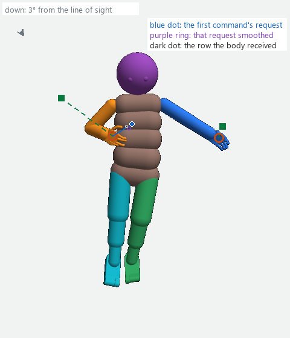
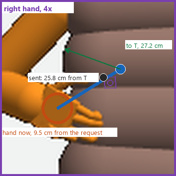
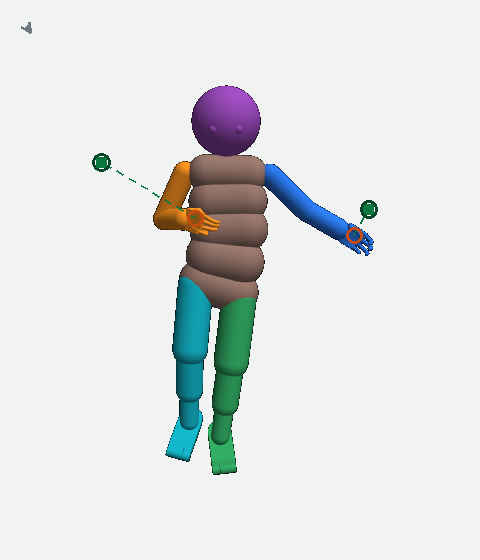
The rule, applied in this sequence: repair E, the trace's proposal, first; then repair B if the planner's commands contain rows no joint can make; then repair A; then repair C; repair D only for a body whose direct command stalls with its motors at their limits. One at a time; the overseer decides each. The only registered keep line today is repair A's (its package's criteria.json); every other keep line on this page is this page's proposal for the overseer, and the common reading this page proposes is step 1's (arrived and stayed, the gap per hand, by more than the spread of section 4).
| Measured | Repair | Then |
|---|---|---|
| 1. Step 1: the direct command brought all 16 hands nearer than the planner command and both hands to T in 2 bodies; the trace: no candidate can request T. | Repair E: seed one candidate from T. | The corrective successor of repair E's comparison, approved by the overseer at 10:00 AM October 24; then the decision on its result (section 7). |
| 2. The planner's commands contain rows no joint can make. The measure, per arm or leg row of each of step 1's eight recorded planner commands: the angle the correction of repair B must turn the row's requested direction to reach one its joint can make; the line that makes a command count is the to set; the builder counts it from those eight commands after the decision on repair E's package. Checked so far on two commands: body 3 of run POSE_A_off_494025 (with the upper arm as requested, no elbow angle puts the forearm on its rod, 57.8° short) and body 5 of run seg41j, the command latched at model step 483,120 (the correction turned the six arm rows 11.1° to 41.4°; section 7, repair B). | Repair B: correct the rows before part 9. | A learning run with repair B on, read as in section 2. |
| 3. Part 4's predicted arm is not joined: over the run's 72 sent-command predictions the predicted elbow sits off the end of the predicted upper arm by a median 1.1 cm (left arm) and 0.7 cm (right); real arms read 0.00 cm (the diagnosis's analysis result.json, key links, selected, upperarm_link_cm, median over 72). | Repair A: the arm-consistency loss term. | Its prepared learning run (held;: not released by the baseline's result). |
| 4. After repair A: part 4's predicted gap still misses the measured gap by more than the start mismatch (today: median 0.19 cm left, 0.75 cm right; worst 7.1 cm, body 1's left hand at model step 496,290, nearer than predicted; worst in the farther direction 7.0 cm, body 5's right hand). | Repair C: retrain part 4 on captured outcomes. | Hold out whole bodies and test the ranking (section 7). |
| 5. A body whose direct command stalls short of T with a motor at its limit (unmeasured: step 1 recorded no motor controls). | Repair D for that body: find the joint, motor or contact that stops it. | First a rerun of that body's direct command from the same start with the motor controls recorded (the baseline tool's instrumented path, its saturation_share and load_over_motor readings), which the builder proposes as one Tests row for bodies 0, 1, 4, 7, 3 and 6 after the decision on repair E's comparison, and the overseer decides; then step 1 again from the same start. |
Step 2 (the planner picks every command: plan every 5 model steps instead of every 10, --intention-every 5, nothing else changed) stays in the plan as the test that removes the commands between planner commands of section 2. Its keep line is this page's proposal for the decision (no Tests row yet): the common reading of this section's heading (arrived and stayed, the gap per hand), against two runs of the unchanged schedule from the same saved state whose difference is the spread of section 4, with each command's T and model step checked against the unchanged schedule's. The overseer sets its place after repair E.
REPAIR E Give part 8 a second starting point: T's own rows
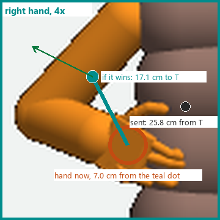
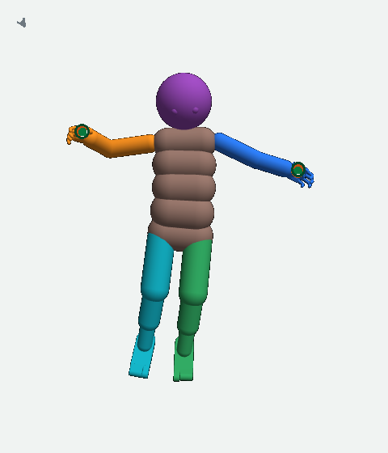
The cause in one line (the words for this page, 11:21 PM): the search only allowed small changes around its first command; the new choice offers the saved target directly and must still survive prediction and physical checks.
What repair E changes (the build the overseer authorized at 11:21 PM, since reviewed, and accepted by the overseer at 1:58 AM October 24 for a bounded comparison, not for production: an isolated branch behind a switch, off by default): one more candidate is scored beside the search's ordinary winner (the version part 8 picks today by section 1's rule) and the first command: the first command with the four rows whose positions part 9 reads (the two wrists, the head, the lower trunk) set to T's world positions and all 15 free body rows (the 25 body rows minus the ten finger rows) set to T's turns written with the first command's sign of the turn's 4 numbers (a turn and its negative are the same turn, but part 2 reads the raw numbers, so the review found that the stored target's sign changed the body head's score), with the eye row, finger joint goal, mask, strengths, radii and the numbers part 9 ignores kept from the first command.
It is not passed through the search's 1.80 cm bound (that would clip it back near the first command) and gets no search of its own; it is scored once, after the same conversion and smoothing the dispatch uses, with the same previous smoother output and present pose, by the same body head, and judged by the same selection and keep rules against the same first-command and start-pose baselines; a tie keeps the ordinary winner; an invalid candidate leaves the old result intact.
Its rows differ from step 1's direct command in four places, as the build record and its correction state: the numbers part 9 ignores (up to 40.02 cm on the 11 turn-only rows), the finger rows (built on T's wrists from the first command's finger joint goal), the strengths (step 1 pushed at the planner command's strengths; this candidate keeps part 7's, up to 0.261 apart) and the sign of the 15 turn rows' 4 numbers (the same turns within 0.0000024°; the candidate takes the first command's sign, the direct command took T's); and it passes the smoothing, which step 1's command did not.
Why: held unchanged, a command of T's rows brought both hands nearer than the planner's in 16 of 16 hands at 250 ms, the planner's own horizon, and at 3 s; today no candidate can request T, so part 8 cannot choose such a command even when its forecast would rank it lowest.
What could still fail:
- The body head may forecast the new candidate worse than the sent command (its forecasts for commands this far from the first command are unmeasured);
- The smoothing passes 35 of 100 of a change per command, and between two planner commands part 7's command is sent, with noise when a bout is on (section 2), so the command the body receives nears the candidate only over several decisions, not at once as in step 1 (how near after three decisions is unmeasured), and how far the body follows it is the physics' reading;
- The candidate moves all 15 free body rows, trunk and legs included, and contacts may follow (body 5's hands touched something other than the floor in 41 of 60 model steps);
- Held, it kept both hands within 2 cm in only 2 of 8 bodies;
- A memory target may be unreachable from the present root (moved 0.80 to 3.25 cm, turned 8.76 to 22.93° since T's record).
Built and reviewed (the build record of 12:25 AM October 24 and its review record of 1:52 AM):
- Branch repair/target-candidate-20261023 from commit 7dd0eabda; switch --planner-target-candidate, default off.
- Reviewed at commit 34b255e0b by an independent reviewer (not the builder), in two rounds.
- Round 1's two required items (the turn-sign item above, a missing test of the main case) were fixed.
- Round 2 found no required item; four recommended: one became the test fbc296d5e adds, two were record corrections, one needed no action.
- fbc296d5e (the test file only) is the commit the overseer accepted; the two runs use it plus the two trainer changes named below; the test counts are in the D1 record, section 9.
The comparison that decides it (the decision reach-target-matched-launch-decision-20261024, 1:58 AM October 24): two runs from the same complete saved state of model step 496,250 (saved by its parent run S4R_measure_496000 as the run of October 23's start state, all eight bodies), the switch off first and then on, each exactly 6 model steps with learning on in both, as in the run of October 23 (the overseer: short learning continuations, not frozen probes), the decision at model step 496,250 read at 250 ms; both end states kept; neither run promoted. Its 8 starts and T's are the 496,250 decision's, not step 1's eight, and are reported as such. The two runs count as a pair only if, before the decision, their states, inputs, chosen T's, ordinary winners and random generators are equal; the switch-off run against the run's own record of 496,250 is reported, never a trigger for a third run. What it reports per body is listed in the D1 record (section 9).
Before the two runs:
- The preflight routes for these two commands (the written preflight records read FAIL on all seven gates, with reasons, so the runs go under the bounded-exception route for these two commands only, never as a PASS; the routes were committed at 9:52 AM October 24, commit b97ff84ef);
- Two narrow trainer changes on the branch (the control file read at every model-step boundary; a hash of each restored world's actual state before the decision), reviewed, the trainer pinned at a48cac796;
- Their Tests rows;
- One focused independent review of the exact commands (READY at 9:41 AM);
- The off run bound to the decision reach-target-matched-launch-decision-20261024 (1:58 AM) and the on run to reach-target-matched-on-authority-20261024 (2:59 AM);
- The launch-capacity guard (need 32 GiB) read before each trainer (the decision reach-target-memory-decision-20261024, 8:40 AM).
Execution attempt 1 (T0 9:53:19 AM October 24) stopped at the package tests row before any trainer: 82 tests, 78 passed, 4 failed, all four assuming the main checkout's training_preflight.py was still the base file while the package's own step list had applied the reviewed change before T0; the three run rows were cancelled at 9:56 AM; nothing trained.
Next (the decision reach-target-tests-successor-decision-20261024, 10:00 AM): one corrective successor, built by the builder: tests of both states of training_preflight.py (the base read from a pinned git blob whose hash is verified; the installed file as it runs), new row ids and attempt paths, 786.4 s of the 900 s budget left, no third attempt; a timing ledger before the off run, and a stop with a smaller proposed comparison if the projected pair does not fit. State as the D1 record's key runtime_decision_20261024 reads at this page's check: execution attempt 1 stopped at the tests row before any trainer; one corrective successor approved by the overseer at 10:00 AM PDT with 786.4 s left; the successor package being built; nothing trained. The overseer reads the result and decides whether repair E goes to a learning run; if the candidate never wins, its score and rejection evidence come before any other run.
Before a learning run with repair E on: that run's own preflight record and Tests row; the overseer decides the launch.
Kept if (this page's proposals for the decision; the overseer set no keep line for the comparison):
- For the comparison: in the bodies where the candidate was selected, the switch-on run's command brings the hands nearer at 250 ms than the switch-off run's.
- For a learning run with repair E on: more hands arrive and stay than in a switch-off run of the same length from the same saved state (the run of October 23 is that run only if the learning run starts from its state, model step 496,250), by more than the spread of section 4.
- If repair E is not kept: section 6's sequence applies next, repair B, then repair A, then repair C.
- If repair E is kept and done is still not reached in its learning run: the same sequence continues, repair B if its measure counts, then repair A, then repair C; step 2's place is the to set.
- If done is still not reached after repair C: this page names no further repair; the overseer decides the next step, and it gets its row on the Tests page before it runs.
REPAIR A Make part 4 predict an arm that is joined
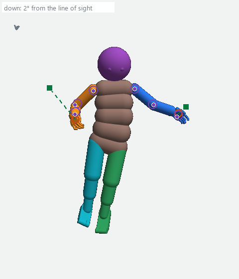
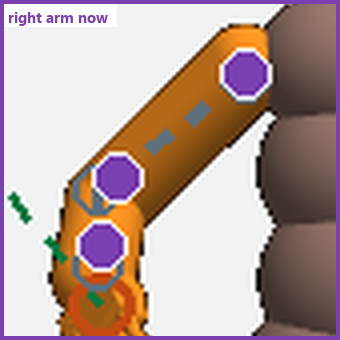
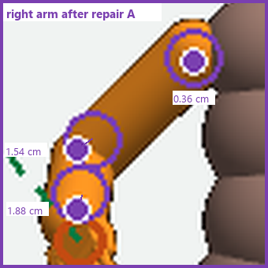
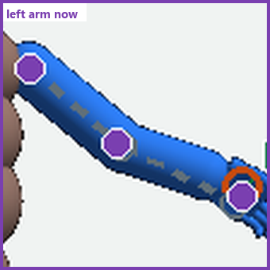
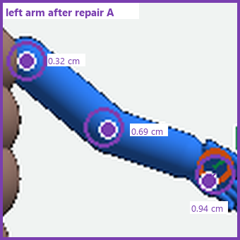
Kept if: judge.py's verdict, written by the reading row arm_consistency_496350_r2_reading into verdict.json beside that row's execution verdict, reads PROPOSE FOR ADOPTION under the package's criteria.json. The pair (Tests rows arm_consistency_496350_r2_control_run and arm_consistency_496350_r2_treatment_run): the term on at weight 0 and at weight 0.2, each 100 model steps from the saved state of model step 496,350. The rule: no engineering guard crossed in either branch; both endpoints preserved; at least 58 valid paired examples; each of the two geometry measures (the upper-arm link length change, the elbow off-axis angle) better in the treatment's forecast in at least k of the valid examples, k the smallest count a fair coin would reach with a chance of 1 in 100 or less (45 when all 69 are valid, 39 when 58 are); each supervised measure worse in fewer than that same k and its median change at least −0.10 × the control's median; and the treatment branch's live outcomes not worse than the control's as groups (median movement toward the goal, median rotation movement, median end palm distance, the share of outcomes that moved toward the goal). The paired part reads forecast accuracy only; the group part reads the body's movement, but not from identical states. This page's proposals for the decision, each needing its own Tests row: that on the same 72 saved predictions the median elbow gap (today 1.1 cm left, 0.7 cm right, from the diagnosis's analysis result.json named in section 6) falls by more than the spread of section 4 (two training runs with the term off), and that more hands arrive and stay in the treatment branch than in the control branch, by more than the spread of section 4.
REPAIR B Correct the command before part 9 so every row is possible
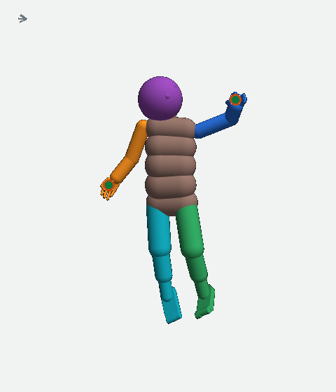
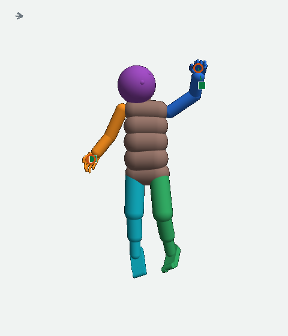
What repair B changes, drawn on the one body it was tried on (run seg41j, body 5, the command latched at model step 483,120; T = model step 483,016, start = 483,119; drawn from the test's saved command rows and pose series with this page's marks, one camera frame, gravity 6° from the line of sight). The letters U, F, H mark the original command's rods for the upper arm, forearm and hand (the hand rods are drawn at 3× their 1.9 cm length); the purple rod from the same origin is the corrected command's.
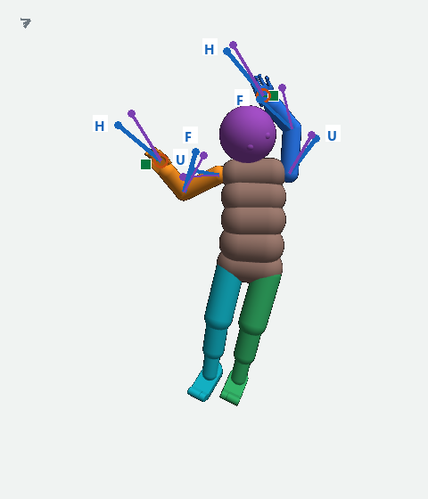
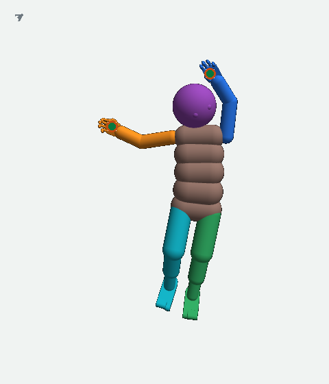
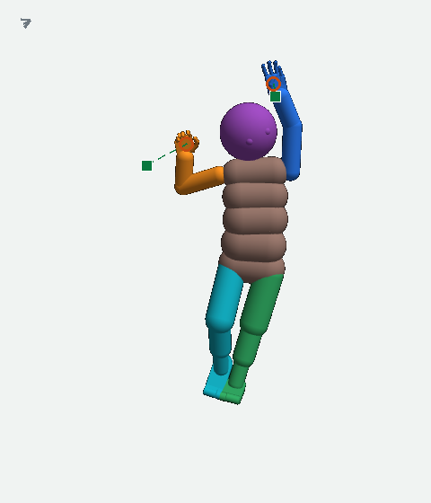
State: both corrections were built September 25 in limb_target_control.py behind two switches that default to off (--parent-relative-targets calf; --reach-projection arms; commit 4ff86f130), and the seg41j test ran both (its record's contract parent_relative_calf_v1+arm_reach_projection_v1). The branch repair/whole-body-request-2026-10-21 added arm_reach.py, the planner's copy of the arm correction so that part 8 scores corrected rows; it was retired unmerged (causal_review_and_retirement in docs/gain_of_function_v4/coordinator/work_items/whole_body_request.json). Reopened only by the rule in section 6. Kept if (this page's proposal for the decision; no Tests row yet): with the correction on, more hands arrive and stay than with it off, by more than the spread of section 4.
REPAIR C Teach part 4 from what the body actually did
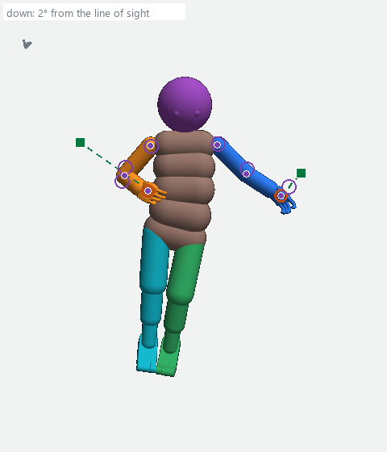
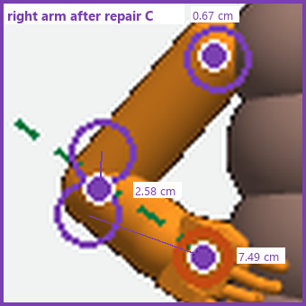
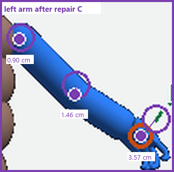
What repair C changes: today part 4 learns at the end of every command (the commands between planner commands included: 20 per body per 100 model steps, 160 over the eight bodies) from the one version that was sent, by the difference between its predicted 250 ms movement of each part and the measured one (efference.py at commit 7dd0eabda: the tenure lesson, graded when the next command appears); its training never includes the outcome of the other 20 versions part 8 scored. Repair C captures, at each model step at which part 8 runs in the next authorized learning run, the exact start (the full world state and part 3's output), then replays all 21 versions from that start, each held 250 ms, and records (version, measured pose): outcomes of versions that were never sent. Part 4 is then retrained on those pairs, offline, with whole bodies held out (step 1's replay runs no learner, so it cannot supply part 3's output). The number of pairs is set by the run: one start per model step at which part 8 runs, up to 21 versions each.
Kept if (this page's proposal for the decision; no Tests row yet): on the held-out bodies the predicted hand's gap misses the measured gap by less than today (median 0.19 cm left and 0.75 cm right; worst 7.1 cm) by more than the spread of section 4 (two retrainings on the same pairs), and, for each held-out start, the versions ranked by predicted pose error come out in the same sequence as ranked by measured pose error, counted as the share of version pairs in the same sequence (0.5 = chance, 1 = every pair), by more than the spread of section 4 (two retrainings on the same pairs).
REPAIR D The motors and the physics: for a body whose direct command stalls
Step 1 recorded no motor controls, so whether a miss (bodies 0, 1, 4, 7; 3 and 6) came from a motor at its limit is unmeasured; repair D's first act for a body is a rerun of its direct command from the same start with the controls recorded (the baseline tool's instrumented path, its saturation_share and load_over_motor readings); the builder proposes it as one Tests row for bodies 0, 1, 4, 7, 3 and 6 after the decision on repair E's comparison, and the overseer decides it. Two tests of October 21 on run seg41j, body 5 (T = model step 483,016, start 483,119) show what repair D would read; both are drawn from their saved pose series with this page's marks, each set in one camera frame, gravity 6° from the line of sight.
Test 1, through part 9. The feasible command: T's hinge angles placed on the start's root (the body's base), every row built by forward kinematics, sent through part 9 and held. Because the root was moved onto the start's, this command's own target has hand points 9.0 cm (left) and 2.0 cm (right) from T's; step 1 avoided that by building the direct command in world coordinates.
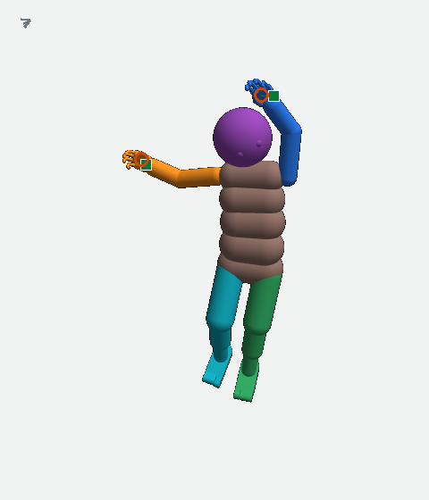
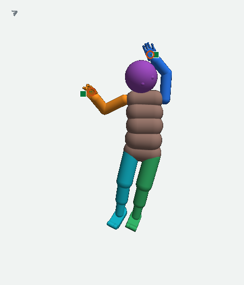
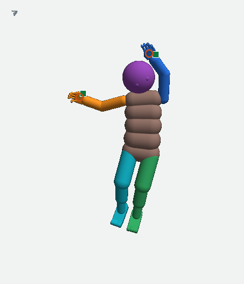
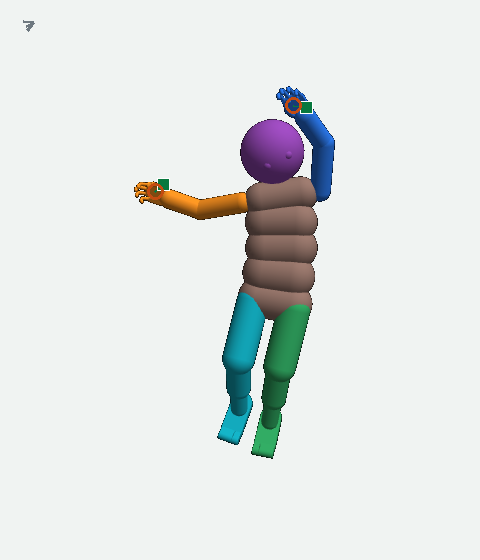
Test 2, through part 9 again, limbs only. A command built by forward kinematics from a pose whose 28 arm and leg hinge angles (7 per arm, 7 per leg) are T's and whose root, trunk, head, eyes and fingers are the start's, sent through part 9 (the run's mapping) and held. T (model step 483,016) and the start are those of repair B's seg41j row above (its second picture is this T); the command is the constructed one just described, not the command latched at model step 483,120.
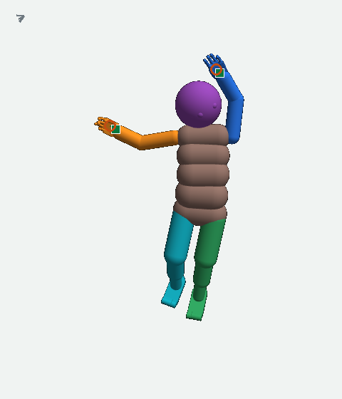
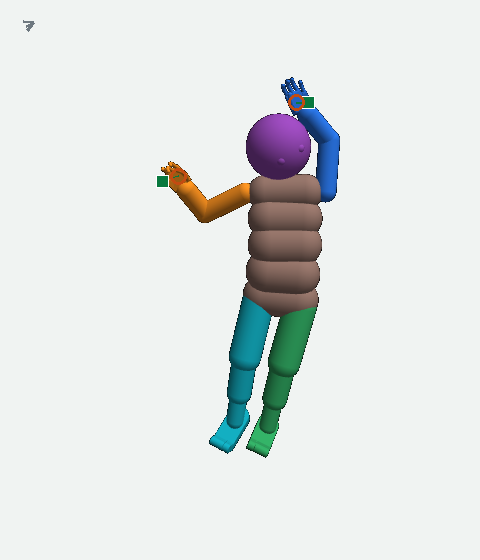
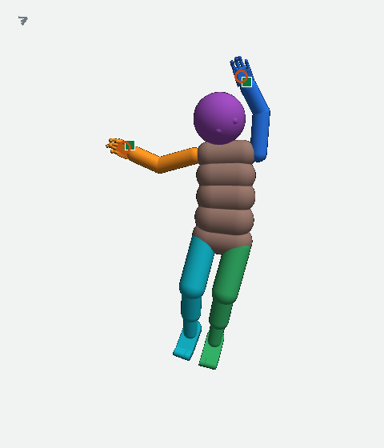
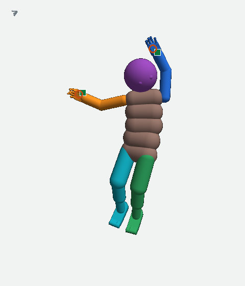
What repair D inspects, per body: at every model step, each joint's angle against its angle in T, each motor's control (−1 to 1; a motor at ±1 is at its limit, as body 3's shoulder motor was in section 3), and the saved contact points (the yellow dots of section 3). What changes: one motor gain, strength or support change at a time, only after the cause is found. Kept if (this page's proposal for the decision; no Tests row yet): the direct command then arrives and stays from the same start.
- Every real saved state on this page is drawn from the saved records by the committed renderer, no physics run; the gap values, model steps, the target-record rule (the planner's label minus one, as the diagnosis verified), the rods' angles, the joint ranges, the pose error values, the gravity angles and the hash of every picture: plan_pictures.json (made by render_plan.py in the same folder from the run of October 23 and its parent run, run POSE_A_off_494025, the baseline's records.npz and result.json, the two October 21 tests' records.npz, and the diagnosis's examples.json for the predicted parts).
- Step 1: Tests row reach_baseline_8start_a2 (10:00 to 10:04 PM PDT); its result file D:/UEMA_Research/external/D/UEMA_scratch/h84/d1_planner_recovery/attempts/reach_baseline_8start_a1/evidence/result.json (written 10:04:31 PM) and records.npz; the package report D:/UEMA_Research/external/D/UEMA_scratch/h84/d1_planner_recovery/reach_baseline_8start_package/REPORT.txt (the root and strength facts, the screens); the decisions Saved/gof_coordination/replies/reach-baseline-result-decision-20261023.txt (10:13 PM), reach-target-candidate-build-20261023.txt (11:21 PM), reach-target-matched-launch-decision-20261024.txt (1:58 AM October 24), reach-target-matched-conditions-decision-20261024.txt and reach-target-matched-on-authority-20261024.txt (2:59 AM), reach-target-memory-decision-20261024.txt (8:40 AM) and reach-target-tests-successor-decision-20261024.txt (10:00 AM); the Tests rows target_matched_496250_package_tests (failed, 9:54 to 9:55 AM), target_matched_496250_off_run, target_matched_496250_on_run and target_matched_496250_pairing (cancelled); repair E's record: key target_candidate_repair_20261023 in docs/gain_of_function_v4/coordinator/work_items/d1_planner_recovery.json (build, review_20261024, t_versus_d_correction_20261024, comparison_package_20261024, runtime_decision_20261024 with its execution_package_20261024, conditions_decision_20261024, memory_decision_20261024, execution_attempt_1_20261024, successor_decision_20261024, integration_test_lesson_20261024 and state; the review record holds the test counts, 164 tests passed with 0 failed: the 22 focused checks and the 142 tests of the 10 existing planner and pose-return files, and the runtime decision lists what the comparison reports per body: whether the candidate was offered, selected or rejected and why, the forecast and actual hand gaps and pose error at 250 ms, the off-against-on differences); the planner trace and the correction of it: key planner_trace_20261023 in docs/gain_of_function_v4/coordinator/work_items/d1_planner_recovery.json (10:20 PM; correction 11:21 PM); the capture itself, D:/UEMA_Research/external/D/UEMA_preserved/s4r_pose_learning_S4R_pose_learning_a2_496250/run/observer/model/chunk_000496261_3716_00004.npz (its arrays motor_out, forecast_pose__iteration0_order, executed, start_pose, goal_pose and decision__smooth_prev give the first command's rows, their smoothed form, the sent rows, the hand now, T's rows and the smoother's previous output (decision__smooth_prev), from which the candidate's smoothed row is computed, drawn in sections 5 and 7; render_plan.py reads them and plan_pictures.json records them under baseline_8start, body 5, region); the capture's executed change counted by this page: capture_496260_change.json.
- The 72-command counts, the babble readings and the medians: three_way_72.json; the kind of each command in the strip and the noise or no-noise split of the 54 between-commands: the run's observer world records (D:/UEMA_Research/external/D/UEMA_preserved/s4r_pose_learning_S4R_pose_learning_a2_496250/run/observer/world/b0 to b7, chunk_*.npz, arrays step, bout and author; the author codes in Source/Python/mimo_bridge/observer_record.py), paired by the diagnosis's case_table.csv. The elbow-off-the-upper-arm medians: D:/UEMA_Research/external/D/UEMA_scratch/h84/d1_planner_recovery/attempts/a2_record_diagnosis_d1/evidence/analysis/result.json (links, selected, upperarm_link_cm). Body 5's predicted parts and the fitted arm: the diagnosis's examples.json (its captions: a2_diagnosis_provenance.json). Body 3's command and rods: provenance.json, gizmo_detail.json. The long form of this plan, with its decisions and their files: H84_REACH_SOLUTION_REVISED_2026-10-23.html.